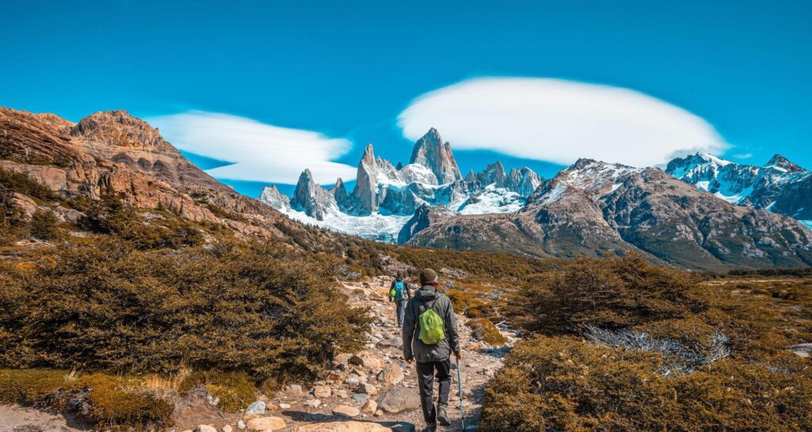

La Patagonia argentina, Patagonia oriental, o región patagónica argentina, es una de las cuatro regiones para el desarrollo económico y social de la República Argentina. Está formada por las provincias de La Pampa, Chubut, Provincia del Neuquén, Río Negro, Santa Cruz y Tierra del Fuego, Antártida e Islas del Atlántico Sur.